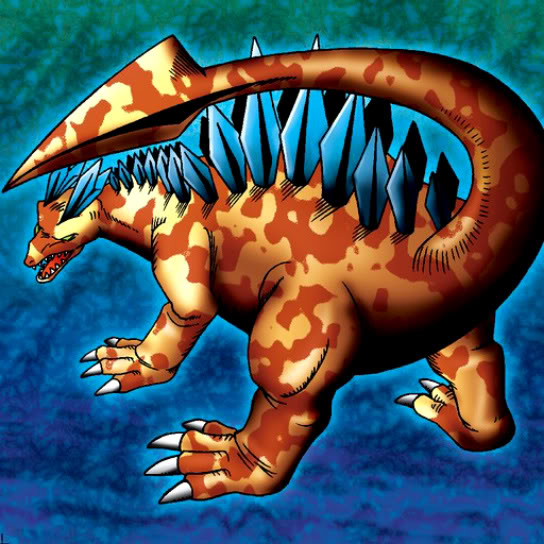

Sword Arm of Dragon

STATS
ATK: 1750
DEF: 2030DECK COST
Deck Cost per Card: 38Fusion List (23 Possible Fusions)
- Sword Arm of Dragon + Armored Zombie = Curse of Dragon
- Sword Arm of Dragon + Bolt Penguin = Twin-Headed Thunder Dragon
- Sword Arm of Dragon + Brave Scizzar = Cyber Saurus
- Sword Arm of Dragon + Clown Zombie = Curse of Dragon
- Sword Arm of Dragon + Dissolverock = Stone D.
- Sword Arm of Dragon + Dokurorider = Curse of Dragon
- Sword Arm of Dragon + Dragon Zombie = Curse of Dragon
- Sword Arm of Dragon + Electric Lizard = Twin-Headed Thunder Dragon
- Sword Arm of Dragon + Electric Snake = Twin-Headed Thunder Dragon
- Sword Arm of Dragon + Fire Reaper = Curse of Dragon
- Sword Arm of Dragon + Firegrass = B. Dragon Jungle King
- Sword Arm of Dragon + Flame Ghost = Curse of Dragon
- Sword Arm of Dragon + Griggle = B. Dragon Jungle King
- Sword Arm of Dragon + Holograph = Cyber Saurus
- Sword Arm of Dragon + Jellyfish = Kairyu-Shin
- Sword Arm of Dragon + Kaminarikozou = Twin-Headed Thunder Dragon
- Sword Arm of Dragon + Kanikabuto = Kairyu-Shin
- Sword Arm of Dragon + LaLa Li-oon = Twin-Headed Thunder Dragon
- Sword Arm of Dragon + Mega Thunderball = Twin-Headed Thunder Dragon
- Sword Arm of Dragon + Oscillo Hero #2 = Twin-Headed Thunder Dragon
- Sword Arm of Dragon + Shadow Specter = Curse of Dragon
- Sword Arm of Dragon + The Immortal of Thunder = Twin-Headed Thunder Dragon
- Sword Arm of Dragon + Trent = B. Dragon Jungle King